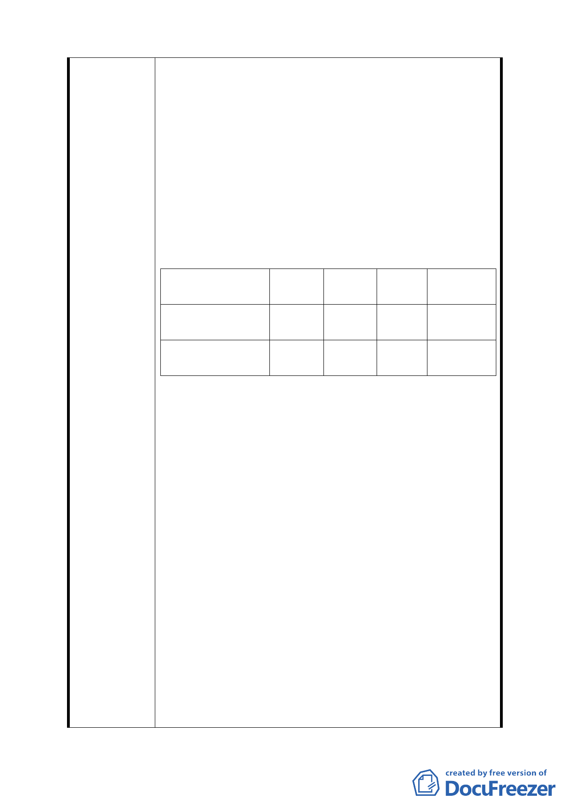

‧ 未來大眾運輸系統民生線、南北線二站體間將帶來
人潮。
‧ 因區域內道路全部均需繞經舊宗路達鄰近快速道
路，因而倉儲運送轉運會增加運貨卡車之交通流
量，為此將會為本區交通帶來極大衝擊，甚至影響
人行之安全。
‧ G1~G10 土地為大內科範圍之核心位置，目前僅有美
福食品作為倉儲使用。
‧ 臺北市近郊因土地成本取得低，倉儲業早已林立，
而本區域土地及建物成本較高自無進駐之意願，為
此本區倉儲使用已不符市場需求。
‧ 又依土地使用情況列表於后：
位置
容積率 建蔽率 開挖 公告現值
率
五期重劃區之倉 225% 40% 50% 18,400 元
儲專業區
/m2
G1~G10 土地（供 200% 40% 50% 19,400 元
倉儲使用）
/m2
‧ 容積率較高者土地公告現值較低，公告地現值較高
者卻限制其土地使用強度，上情已不符公平原則。
四、 申請人領有 96 建字第 0237 號建照執照，現已辦理變
更設計及都市設計審議中，目前規劃地下四層、地上
六層。
‧ 為滿足實際停車需求，特參考基地附近已獲 貴局審
查通過且完成興建之ㄧ般批發業現況，作為規劃本
案停車數量之依據。但扣除地下一層機車停車空間
及其他機電設備空間後，停車位之留設必須開挖至
地下四層才能滿足需求。今建物結構行為水浮力分
析，地上六層地下室不宜超過三層。為此，除增加
新建地下四層一層之造價外，基礎工程另需追加壁
樁以改善水浮力。
五、 本計劃案內第七頁土地使用亦載明，本區目前已開發
建築基地僅約佔五成，第十三頁另述大眾運輸系統不
足，日後交通流量擴增，隨著園區逐漸開發，交通問
題將浮現。目前本區內路邊停車格均已滿載，停車空
間顯已極為不足，未來若將路邊停車格取消時，停車
問題必將更益嚴重。原大彎北段可為前車之鑑。
7